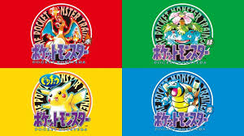
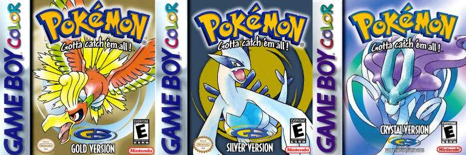
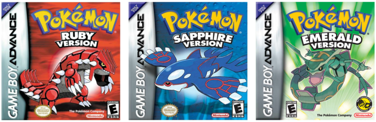

Pokémon, abreviação de Pocket Monsters, é uma famosa franquia da Nintendo. O universo abrange jogos de videogame, cartas colecionáveis (Pokémon TCG) e jogos mobile, como o popular Pokémon GO. Pokémon é uma franquia de mídia japonesa composta por jogos eletrônicos, séries de anime e filmes, um jogo de cartas colecionáveis e outras mídias relacionadas. A franquia se passa em um universo compartilhado no qual humanos coexistem com criaturas conhecidas pelo nome de Pokémon, uma grande variedade de espécies dotadas de poderes especiais. O público-alvo principal da franquia são crianças de 5 a 12 anos, mas sabe-se que atrai pessoas de todas as idades. Estima-se que Pokémon seja a franquia de mídia de maior faturamento do mundo e uma das franquias de jogos eletrônicos mais vendidas. Pokémon é uma das franquias de videogames mais populares do mundo, criada pela empresa japonesa Nintendo em parceria com a Game Freak. O primeiro jogo foi lançado em 1996 para o console Game Boy e tinha como objetivo capturar, treinar e batalhar com criaturas chamadas Pokémon.
JOGOS DA FRANQUIA
1ª GERAÇÃO: KANTO
A primeira geração de Pokémon foi composta pelos jogos Pokémon Red, Green (lançado apenas no Japão), Blue e, posteriormente, Yellow. Nesses jogos, os jogadores assumiam o papel de um jovem treinador que explorava a região de Kanto, カントー地方 (Kantō-chihō), em busca de se tornar o Campeão Pokémon. Durante a aventura, era possível capturar, treinar e batalhar com os 151 Pokémon originais, formando equipes para enfrentar líderes de ginásio e a poderosa Elite dos Quatro. Essa geração apresentou personagens icônicos que se tornaram símbolos da franquia, como Pikachu, Charmander, Bulbasaur e Squirtle. O enorme sucesso desses jogos deu origem a uma das maiores franquias de entretenimento do mundo, inspirando séries animadas, filmes, cartas colecionáveis e diversos outros produtos.

2ª GERAÇÃO: JOHTO
A segunda geração começou com Pokémon Gold e Silver, seguidos por Pokémon Crystal, e apresentou a região de Johto, ジョウト地方 (Jōto-chihō). Esses jogos adicionaram 100 novos Pokémon, aumentando a Pokédex para 251 criaturas. Uma das grandes novidades foi o sistema de dia e noite, que fazia alguns Pokémon aparecerem apenas em determinados horários. Também foram introduzidos a reprodução de Pokémon, os Pokémon Bebês, os tipos Sombrio e Aço e novas formas de evolução. Outro destaque é que, depois de completar a aventura em Johto, o jogador pode retornar à região de Kanto, onde pode enfrentar novamente diversos Líderes de Ginásio.

3ª GERAÇÃO: HOENN
A terceira geração foi apresentada nos jogos Pokémon Ruby, Sapphire e Emerald, ambientados na região de Hoenn, ホウエン地方 (Hōen-chihō). Essa geração acrescentou 135 novos Pokémon, levando a Pokédex para um total de 386 espécies. Os jogos trouxeram várias mudanças importantes no sistema de batalhas, como as Habilidades e as Naturezas, que influenciam as características dos Pokémon. Também foram introduzidas as Batalhas em Dupla, permitindo que dois Pokémon participassem da batalha ao mesmo tempo. A história também ganhou destaque com os lendários Groudon, Kyogre e Rayquaza e os conflitos entre as equipes Magma e Aqua.

4ª GERAÇÃO: SINNOH
A quarta geração começou com Pokémon Diamond e Pearl e posteriormente recebeu Pokémon Platinum, levando os jogadores para a região de Sinnoh, シンオウ (Shin'ō). Foram adicionados 107 novos Pokémon, muitos deles sendo evoluções de Pokémon de gerações anteriores. A história apresenta importantes Pokémon lendários, como Dialga, Palkia e Giratina, relacionados ao tempo, ao espaço e ao Mundo Distorcido. Essa geração também trouxe melhorias nos gráficos e nas batalhas e ficou marcada pela expansão do sistema de batalhas online. Sinnoh também possui uma grande variedade de ambientes, como montanhas, florestas, cavernas e áreas cobertas de neve.
5ª GERAÇÃO: UNOVA
A quinta geração apresentou a região de Unova e introduziu 156 novos Pokémon, elevando o total para 649 espécies. Sua história aborda temas como a relação entre humanos e Pokémon e a liberdade dessas criaturas. Os jogos também trouxeram batalhas triplas, batalhas rotacionais e mudanças nos cenários durante os combates. Entre os Pokémon lendários mais conhecidos estão Reshiram, Zekrom e Kyurem.
Jogos: Pokémon Black, White, Black 2 e White 2.
6ª GERAÇÃO: KALOS
A sexta geração levou os jogadores para Kalos, uma região inspirada na França. Uma de suas principais novidades foi a introdução do tipo Fada, que modificou algumas estratégias de batalha. Também surgiu a Mega Evolução, permitindo que determinadas espécies assumissem temporariamente formas mais poderosas. Os jogos marcaram a chegada dos gráficos tridimensionais à série principal.
Jogos: Pokémon X e Y.
7ª GERAÇÃO: ALOLA
A sétima geração apresentou Alola, um arquipélago de ilhas tropicais. A região introduziu formas regionais de Pokémon conhecidos e os movimentos Z, ataques especiais que podiam ser utilizados durante as batalhas. Outra novidade foi a substituição dos tradicionais desafios de ginásio por provas e desafios das ilhas, dando à aventura uma estrutura diferente das gerações anteriores.
Jogos: Pokémon Sun, Moon, Ultra Sun e Ultra Moon.
8ª GERAÇÃO: GALAR
A oitava geração apresentou Galar, uma região inspirada principalmente no Reino Unido. Os jogos introduziram o fenômeno Dynamax, que aumenta temporariamente o tamanho e o poder de determinados Pokémon. Algumas espécies também podiam assumir formas especiais chamadas Gigantamax. A Área Selvagem permitiu explorar ambientes abertos e encontrar Pokémon em diferentes condições climáticas.
Jogos: Pokémon Sword e Shield.
9ª GERAÇÃO: PALDEA
A nona geração apresentou Paldea, uma região inspirada na Península Ibérica. Os jogos trouxeram um mundo aberto que permite explorar diferentes áreas em uma ordem mais livre, além do fenômeno Terastal, que altera o tipo de um Pokémon durante a batalha. A história também apresenta Pokémon Paradoxo, associados a conceitos de passado e futuro, ampliando os mistérios desse universo.
Jogos: Pokémon Scarlet e Violet.